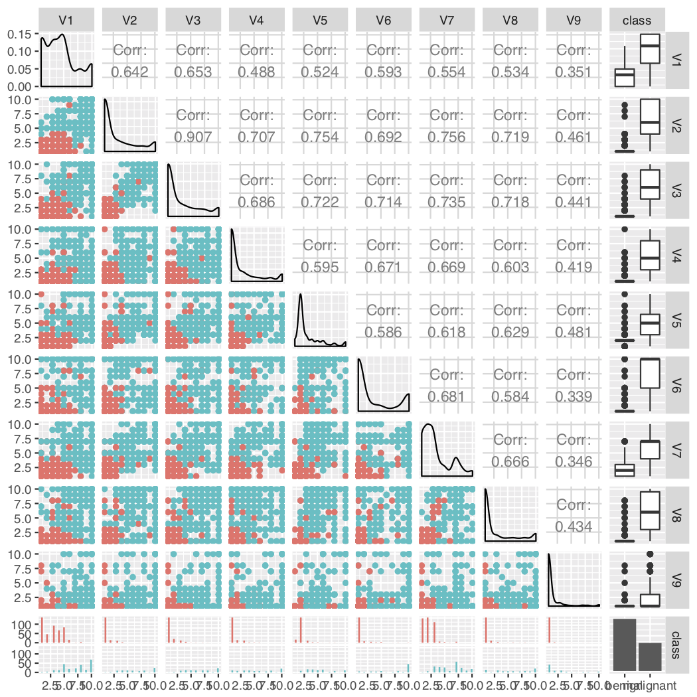
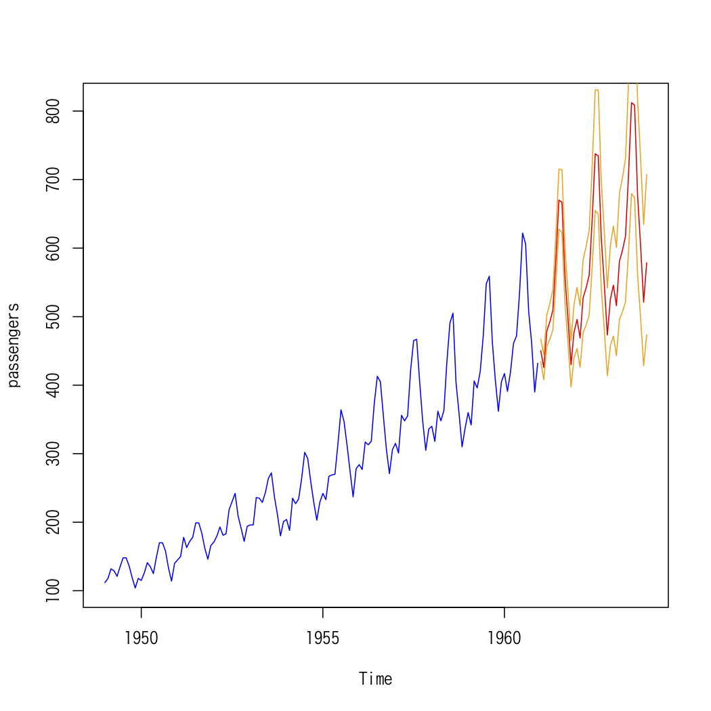

Rによるデータ解析
第1講 - さまざまな多変量解析とR言語の使い方
(Press ? for help, n and p for next and previous slide)
R言語の概要
R言語とは
- 統計計算のための言語と環境の総称
- オープンソース・フリーソフトウェア
- パッケージ を利用して容易に機能拡張が可能
- パッケージの開発は非常に活発 (現在10000を越える)
- 最新の技術や方法が簡単に導入できることも多い
- https://www.r-project.org/ (プロジェクトのサイト)
RStudioとは
- RStudio社が開発している統合開発環境 (IDE)
- R によるデータ解析や統計計算・パッケージ開発を支援
- OSに依存しない対話型操作環境を提供
- 本講義ではRStudioを用いて説明を行う
- https://posit.co (Posit Software のサイト)
R言語の得意分野
- データの分類・集計・整理
- 記述統計量 (基本・要約統計量) の計算
- グラフによる視覚化
- さまざまな統計分析 (多変量解析を含む)
- プログラムによる 処理の自動化
- 確率的シミュレーション (モンテカルロ法)
- 擬似乱数による不確定性を含む現象の模擬
参考 : R言語のオンラインコース
- RStudio の初心者向ガイド
https://education.rstudio.com/learn/beginner/ - posit Cloud の自習コース
https://posit.cloud/learn/recipes/ - Data Camp のR入門コース
https://onboarding.datacamp.com/
多変量解析
多変量解析とは
- 複数の変量からなるデータを分析する手法の総称
- 回帰分析 : 複数の量を用いて注目する変数の値を説明する
- 主成分分析 : 全体を説明する少数の特徴量を構成する
- 判別分析 : 特徴量の違いでカテゴリ分けを行う
- クラスタ分析 : 特徴量の違いに着目してクラスタを構成する
- 時系列解析 : 時間とともに変化する現象を記述する
- 機械学習で使われる手法の基礎
- 教師あり問題 : 回帰分析(量的データ)・判別分析(質的データ)
- 教師なし問題 : 主成分分析・クラスタ分析
回帰分析の考え方
- ある変数(目的変数)を別の変数によって説明・予測するための関係式(回帰式)を構成する
- 単回帰 : 一つの変数で目的変数を説明する
- 重回帰 : 複数の変数で目的変数を説明する
- 分析の事例
- 広告宣伝費と商品の売上を予測する式を作り，広告効果があるかどうか判定する
- 築年数・駅からの距離・広さ・間取りで家賃を説明する式を作り，新規に家賃を設定する際に利用する
単回帰の例 (MASS::Animals)
| body [kg] | brain [g] | |
|---|---|---|
| Mountain beaver | 1.350 | 8.1 |
| Cow | 465.000 | 423.0 |
| Grey wolf | 36.330 | 119.5 |
| Goat | 27.660 | 115.0 |
| Guinea pig | 1.040 | 5.5 |
| Dipliodocus | 11700.000 | 50.0 |
| Asian elephant | 2547.000 | 4603.0 |
| Donkey | 187.100 | 419.0 |
| … | … | … |

Figure 1: 体重と脳の重さの関係 (単回帰)
重回帰の例 (wine.csv)
| 年号 | 価格(対数) | 冬の降雨 | 気温 | 秋の降雨 | 経過年 |
|---|---|---|---|---|---|
| 1952 | -0.99868 | 600 | 17.1167 | 160 | 31 |
| 1953 | -0.4544 | 690 | 16.7333 | 80 | 30 |
| 1954 | NA | 430 | 15.3833 | 180 | 29 |
| 1955 | -0.80796 | 502 | 17.15 | 130 | 28 |
| 1956 | NA | 440 | 15.65 | 140 | 27 |
| 1957 | -1.50926 | 420 | 16.1333 | 110 | 26 |
| 1958 | -1.71655 | 582 | 16.4167 | 187 | 25 |
| 1959 | -0.418 | 485 | 17.4833 | 187 | 24 |
| … |

Figure 2: ワインの価格と生産環境の関係

Figure 3: 生産環境によるワイン価格の予測 (重回帰)
主成分分析の考え方
- 多数の変数が与えられたときに，変数のもつ構造を効率的に記述できる少数個の特徴量を構成する
- 分析の事例
- 野球選手の打撃成績(打率，本塁打数，打点など)から，打者としての特徴を記述する指標を作成する
- 複数銘柄からなる株価の時系列データから，市場全体の変動を記述する総合指標を作成する
主成分分析の例 (jpamenity.csv)
| 昼夜人口比 | 年少人口比 | 老年人口比 | 人口増減率 | |
|---|---|---|---|---|
| 北海道 | 100.0 | 11.7 | 26.0 | -0.47 |
| 青森県 | 100.0 | 12.1 | 27.0 | -0.95 |
| 岩手県 | 99.7 | 12.4 | 27.9 | -0.84 |
| 宮城県 | 100.2 | 13.0 | 22.9 | -0.09 |
| 秋田県 | 99.9 | 11.1 | 30.7 | -1.12 |
| 山形県 | 99.8 | 12.6 | 28.3 | -0.78 |
| 福島県 | 99.6 | 12.9 | 26.1 | -1.41 |
| 茨城県 | 97.2 | 13.2 | 23.8 | -0.51 |
| … | .. | .. | .. | .. |

Figure 4: 県別の生活環境(人口動態)の散布図

Figure 5: 県別の生活環境(教育・労働)の散布図

Figure 6: 県別の生活環境(貯蓄・余暇)の散布図

Figure 7: 県別の生活環境の主成分分析
判別分析の考え方
- ある個体が複数のクラスのいずれかに属するとき，その個体の特徴量からどのクラスに属するかを予測するモデルを構築する
- 分析の事例
- 食道がんを患っている人とそうでない人を，年齢・飲酒量・喫煙度から判別する
- 銀行が融資判断をするために，企業の財務データから，その企業が期間内に債務不履行となるか否かを予測する
判別分析の例 (MASS::biopsy)
| ID | V1 | V2 | V3 | V4 | V5 | V6 | V7 | V8 | V9 | class |
|---|---|---|---|---|---|---|---|---|---|---|
| 1000025 | 5 | 1 | 1 | 1 | 2 | 1 | 3 | 1 | 1 | benign |
| 1002945 | 5 | 4 | 4 | 5 | 7 | 10 | 3 | 2 | 1 | benign |
| 1015425 | 3 | 1 | 1 | 1 | 2 | 2 | 3 | 1 | 1 | benign |
| 1016277 | 6 | 8 | 8 | 1 | 3 | 4 | 3 | 7 | 1 | benign |
| 1017023 | 4 | 1 | 1 | 3 | 2 | 1 | 3 | 1 | 1 | benign |
| 1017122 | 8 | 10 | 10 | 8 | 7 | 10 | 9 | 7 | 1 | malignant |
| 1018099 | 1 | 1 | 1 | 1 | 2 | 10 | 3 | 1 | 1 | benign |
| 1018561 | 2 | 1 | 2 | 1 | 2 | 1 | 3 | 1 | 1 | benign |
| … | .. | .. | .. | .. | .. | .. | .. | .. | .. | … |

Figure 8: 乳癌患者(良性・悪性)の生研検査の散布図

Figure 9: 生研検査の主成分分析

Figure 10: 生研検査による乳癌患者の判別分析
クラスタ分析の考え方
- 特徴量の違いに着目して，妥当な個体のグループ(クラスタ)を構成する
- 階層的な方法 : 系統樹を作成する
- 非階層的な方法 : グループの代表値を推定する
- 分析の事例
- 映画に関するアンケート調査から潜在的なジャンル(グループ)を抽出する
- 顧客の購買履歴から，嗜好の異なる顧客グループに分類し，グループごとの販売戦略を立てる
クラスタ分析の例 (omusubi.csv)
| 梅 | 鮭 | 昆布 | 鰹 | 明太 | 鱈子 | ツナ | 他 | |
|---|---|---|---|---|---|---|---|---|
| 北海道 | 13.86 | 27.94 | 5.58 | 5.26 | 9.26 | 15.06 | 11.61 | 11.39 |
| 青森 | 14.93 | 30.79 | 7.01 | 2.43 | 10.36 | 11.58 | 11.58 | 11.28 |
| 岩手 | 17.91 | 23.13 | 5.22 | 3.35 | 17.91 | 10.07 | 10.44 | 11.94 |
| 宮城 | 15.16 | 29.5 | 10 | 1.66 | 14.83 | 8.83 | 12.83 | 7.16 |
| 秋田 | 10.63 | 31.38 | 5.31 | 3.19 | 14.89 | 13.29 | 10.63 | 10.63 |
| 山形 | 16.58 | 20.27 | 8.29 | 1.38 | 18.89 | 10.13 | 12.9 | 11.52 |
| 福島 | 12.37 | 21.99 | 8.93 | 3.43 | 16.49 | 9.62 | 19.24 | 7.9 |
| 茨城 | 15.42 | 26.49 | 7.98 | 2.54 | 18.33 | 11.79 | 11.79 | 5.62 |
| … | .. | .. | .. | .. | .. | .. | .. | .. |

Figure 11: おむすびの具に関するアンケート分析 (県別の集計)

Figure 12: アンケート結果にもとづく県のクラスタ分析
時系列解析の考え方
- 時間とともに変化する現象を記述するために，未来の値を過去の値で近似する式を構成する
- 自己回帰 (ARモデル) : 過去の影響の記述
- 移動平均 (MAモデル) : 記憶のある不確定性
- 分析の事例
- 市町村の過去の年齢別の人口変動から将来の人口比率の推移を予測する
- 食品・飲料の季節ごとの販売履歴から，将来の需要量を予測して生産計画を立てる
時系列解析の例 (datasets::AirPassengers)
| Jan | Feb | Mar | Apr | May | Jun | Jul | Aug | Sep | … | |
|---|---|---|---|---|---|---|---|---|---|---|
| 1949 | 112 | 118 | 132 | 129 | 121 | 135 | 148 | 148 | 136 | … |
| 1950 | 115 | 126 | 141 | 135 | 125 | 149 | 170 | 170 | 158 | … |
| 1951 | 145 | 150 | 178 | 163 | 172 | 178 | 199 | 199 | 184 | … |
| 1952 | 171 | 180 | 193 | 181 | 183 | 218 | 230 | 242 | 209 | … |
| 1953 | 196 | 196 | 236 | 235 | 229 | 243 | 264 | 272 | 237 | … |
| 1954 | 204 | 188 | 235 | 227 | 234 | 264 | 302 | 293 | 259 | … |
| 1955 | 242 | 233 | 267 | 269 | 270 | 315 | 364 | 347 | 312 | … |
| … | .. | .. | .. | .. | .. | .. | .. | .. | .. | … |

Figure 13: 米国航空機旅客量の変遷

Figure 14: 階差時系列の自己相関分析

Figure 15: 航空機旅客量の予測 (SARIMAモデルによる)
RStudio の構成
起動画面
- 以下 RStudio を用いて説明
- 複数の タブ (tab; つまみ) を含む4つの ペイン (pane; 枠) が立ち上がる
- 左上 : エディタ・表など (開いていない場合もある)
- 左下 : コンソール・ターミナルなど
- 右上 : 作業環境内の変数・コマンド履歴など
- 右下 : パッケージ・グラフィックス・ヘルプなど
- ペインの配置や数は個別に設定することが可能
- メニュー : Tools > Global Options で設定
コンソール (左下ペイン)
- R言語で記述されたコマンドを入力
例えば以下のような計算を行うことができる
#' 一般的な数式を入力すれば計算機として使える #' "#" 以降はコメントとして無視される 1 + 2 + 3 + 4 # 空白は無視される sin(pi/3) / cos(pi/3) # tan(pi/3) になるはず
コンソール上で終了を指示する以下のコマンドを入力すれば R を終了させることができる
#' R の終了には q() または quit() を用いる q()
- メニューの Quit RStudio も利用可能
- 終了できない場合はOSの機能で強制終了する必要がある
エディタ (左上ペイン)
- コマンドを記述したファイルを操作
- 一連のコマンドをまとめたり修正しながら実行
- コンソールに入力したコマンドは直ちに実行されてしまう
- コマンドを実行順に記述したファイル R Script を作成
- ファイル(の一部)を実行
- ファイルを保存
同一ファイル内でプログラムと文書の記述も可能
- R Markdown
- Quarto
(本講義では扱わない)
ヘルプ (右下ペイン)
- 各関数の詳細を記述したヘルプが参照可能
- 機能，引数名，引数の既定値，実行例など
- ヘルプ内の検索はその下の Find in Topic で可能
- コンソール内では関数
help()や?などを利用
パッケージ (右下ペイン)
- パッケージを用いて機能を拡張
- RStudio でのインストール手順
- 右下ペイン Package タブをクリック
- 左上の Install をクリック
- パッケージ名を入力し Install をクリック
- 利用可能なパッケージの情報は 右下ペイン Package タブで確認できる
作業ディレクトリ
- プログラムが実行されるディレクトリ(フォルダ)
- 作業ディレクトリにあるファイルの読み書きはパスを指定する必要がない
- 現在の作業ディレクトリは Console タブで確認
- メニュー : Session > Set Working Directory で指定
- 読み込んだファイルの場所を選択
- Files タブ (右下ペイン) の場所を選択 (More からも選択可)
- ディレクトリを直接選択
プロジェクト
- 作業環境をまとめて設定・保存する機能
- 作成したプロジェクトは Project ボタン(右上)から選択可能
- いつでもプロジェクトを中断可能
- プロジェクト毎に履歴や変数を保存可能
- 複数のプロジェクトを定義可能
- 一般的なプロジェクトの作成手順
- Project ボタンから New Project を選択
- Create Project ダイアログで New Directory を選択
- 既にあるディレクトリを用いる場合は Existing Directory
- Github などを利用する場合は Version Control
- Project Type ダイアログで New Project を選択
- Directry Name とその親ディレクトリを指定
終了時の注意
終了時にコンソールに以下のメッセージが表示される場合がある
> q() Save workspace image? [y/n/c]:
- 作業で使った変数などをセーブするか尋ねている
yを入力: セーブする (yesの略)nを入力: セーブしない (noの略)cを入力: Rの終了をキャンセルする (cancelの略)
- セーブした場合次回起動時に読み込まれる
基本的な使い方
計算をする
- 四則演算や数学関数は直感的な文法で計算可能
| 加減乗除 | +, -, *, / |
| 羃乗 | ^ または ** |
| 三角関数 | sin(), cos(), tan() |
| 逆三角関数 | asin(), acos(), atan() |
| 指数関数 | exp() |
| 対数関数 | log(), log10(), log2() |
| 双曲線関数 | sinh(), cosh(), tanh() |
| 平方根 | sqrt() |
| 絶対値 | abs() |
電卓として使う
コンソール上での計算例
#' 与えられた式の計算をコンソール上で実行してみよう #' 1 x 2 + 3^2 の計算 1 * 2 + 3^2 #' sin(2π) の計算 sin(2*pi) #' √2 + |-0.6| の計算 sqrt(2) + abs(-0.6)
[1] 11 [1] -2.449294e-16 [1] 2.014214
- 入力内容は右上の History タブで確認可能
エディタから実行する
- 新規ファイルの作成 (以下のいずれか)
- 左上の + から R Script を選択
- File から New File を選択， 更に R Script を選択
- エディタ上でコマンドを記述
- 実行範囲の選択
- 一行のみ: カーソルをその行に移動
- 複数行: クリックしてながら移動して選択する
- 選択範囲の実行 (以下のいずれか)
- 左上の Run をクリック
- Code から Selected Line(s) を選択 (Ctrl/Command+Enter)
R Script ファイルを保存する
- 以下のいずれかで保存することができる
- 左上のディスクのマークをクリック
- File から Save を選択 (Ctrl/Command+S)
- ファイル作成に関する注意
- 保存する時にファイル名の入力が求められる
- 拡張子は通常 .R または .r を利用する
- # 以降の文字列は実行されないのでコメントとして有用
関数
- 関数の取り扱いは一般的な計算機言語とほぼ同様
- 関数は引数とその値を指定して実行(引数がない場合もある)
- 引数名は順序を守れば省略可能
関数の呼び出し方 (関数名を
fとする)f(arg1 = value1, arg2 = value2) # 擬似コード #' arg1, arg2 は引数の名前，value1, value2 は引数に渡す値を表す f(value1, value2) # 上と同値．順序に注意
- 擬似コード = 実行しても動かないコード
- 実装されている関数の使い方は
help(関数名)または?関数名で ヘルプが表示される
関数の実行例
正弦関数の計算
#' 正弦関数(引数が1つ)の計算例 sin(x = pi/2) sin(pi/2) # 引数名は省略でき，前の行とこの行は同じ結果になる
対数関数の計算
#' 対数関数(引数が2つ)の計算例 #' 以下は擬似コード．a, b を適当な数値に置き換えて実行しなさい log(a, b) # 底を b とする a の対数 log(x = a, base = b) #上と同値 log(base = b, x = a) #上と同値(引数名があれば順序は自由に変えられる) log(b, a) # = log(x=b,base=a) (引数名がなければ規定の順序で解釈される) log(a) # 自然対数 =log(a,base=exp(1))
ヘルプ機能
- 各関数の詳細を記述したヘルプが用意されている
- Description (機能の概要)
- Usage (関数の呼び出し方)
- Arguments (関数の引数)
- Value (関数の返り値)
- Examples (実行例)
- ヘルプに関連する関数
help()(使い方や例の表示)example()(例を実際に実行してくれる)help.search()(キーワード検索)
- 右下ペイン Help タブの利用
- 右上にある検索窓でヘルプを参照可能
- 左上にある検索窓はヘルプ内を検索可能
ヘルプ機能の利用例
ヘルプの使い方
#' 関数 log() に関するヘルプの例 help(log) # Helpタブに結果は表示される ?log # 上と同値 example(log) # ヘルプ内の例を実行 help.search("log") # "log"に関連する項目は？ ??"log" # 上と同値
- 右下ペインの Help タブに表示される
データ型
- Rではさまざまな数値を扱うことができる
- 実数および複素数 (指数表記にも対応)
- 無限大や不定な数など特殊なものにも対応
| 型の名称 | 役割 | 例 |
|---|---|---|
numeric |
(広義の)実数を表す | 1, pi, NaN |
complex |
複素数を表す | 1i, 3-4i |
character |
文字列を表す | "foo", "Hello World!" |
logical |
論理値(真偽)を表す | TRUE, FALSE, 3<4, NA |
オブジェクト
- 変数，関数，計算結果などを オブジェクト と呼ぶ
- 文字列を変数名としてオブジェクトを保持することができる
- オブジェクトの内容を別のオブジェクトに代入することができる
- 保持しているオブジェクトの情報は右上ペインの Environment タブで確認できる
オブジェクトの代入の例
代入操作の例
#' 数値を変数 foo に代入する (foo <- 3) # foo <- 3; print(foo) と等価 #' 変数 foo を用いて計算し，結果を bar に代入する bar <- sin(2/3*pi) + cos(foo * pi/4) # 計算結果は表示されない #' 変数 bar の内容を表示する print(bar)
[1] 3 [1] 0.1589186
- 計算結果や良く使う文字列の保存に利用できる
- 変数名は自由に決められるが，
予約語
c, q, t, C, D, F, I, Tには注意が必要
自作関数
- 他の言語と同様にRでも関数を定義できる
関数の定義には関数
function()を利用する#' 関数 function() の使い方 (擬似コード) 関数名 <- function(引数){ # 計算ブロックの開始 ## このブロック内に必要な手続きを記述する．複数行に渡って構わない return(返値) # 計算結果を明示的に示す } # ブロックの終了
自作関数の例
縦と横の長さを与えて長方形の面積を計算
#' 縦の長さ a, 横の長さ b (既定値は1) の長方形の面積 foo <- function(a, b = 1){ out <- a * b return(out) # 計算結果を外に返却 } #' 実行例 foo(2, 3) # foo(a = 2, b = 3) と同義 foo(2) # foo(a = 2, b = 1) と同義
[1] 6 [1] 2
無名関数 (anonymous function) の作り方
#' 変数や関数を定義して計算する方法 (x <- 1:10/10) foo <- function(x) sin(x)/x # 式の計算結果を返却(returnを省略可) foo(x) #' 変数や関数を定義せずに計算する方法 (function(x) sin(x)/x)(1:10/10) (\(x) sin(x)/x)(1:10/10) # R 4.1 以降の短縮表現
[1] 0.1 0.2 0.3 0.4 0.5 0.6 0.7 0.8 0.9 1.0 [1] 0.9983342 0.9933467 0.9850674 0.9735459 0.9588511 0.9410708 0.9203110 [8] 0.8966951 0.8703632 0.8414710 [1] 0.9983342 0.9933467 0.9850674 0.9735459 0.9588511 0.9410708 0.9203110 [8] 0.8966951 0.8703632 0.8414710 [1] 0.9983342 0.9933467 0.9850674 0.9735459 0.9588511 0.9410708 0.9203110 [8] 0.8966951 0.8703632 0.8414710
- オブジェクト(変数や関数)を作成する必要がない場合に有用
練習
- R の関数 integrate() についてヘルプを調べなさい．
以下の関数の定積分を求めなさい．
\begin{align} f(x)&=\frac{1}{1+x^{2}},\quad x\in[0,1]\\ g(x)&=\exp\left( -\frac{x^{2}}{2} \right),\quad x\in\mathbb{R} \end{align}
関数 integrate() を利用して定積分を計算
#' 関数 1/(1+x^2) を区間 [0,1] で積分 (関数オブジェクトを渡す書き方) f <- function(x) 1/(1+x^2) # 関数を定義 integrate(f, 0, 1) # pi/4 #' 関数 e^(-x^2/2) を実軸全体で積分(Gauss積分) (関数を定義しない書き方) integrate(\(x)exp(-x^2/2), -Inf, Inf) # sqrt(2*pi)
0.7853982 with absolute error < 8.7e-15 2.506628 with absolute error < 0.00023
次回の予定
- データの取り扱い
- 描画の基礎
- 確率シミュレーション